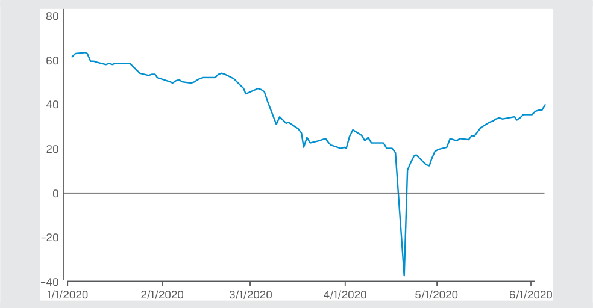
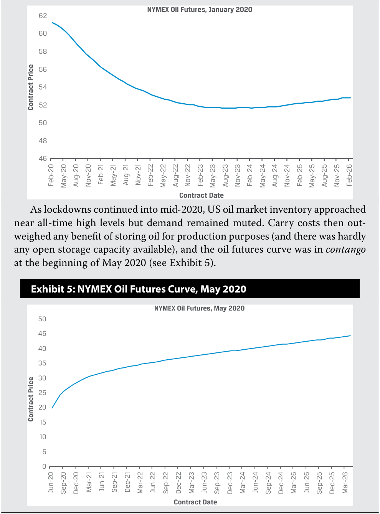

Learning Module 5 Natural Resources - Part 1: Introduction
Volume 8: Alternative Investments
Learning Module 5 Natural Resources
Part 1/2: Introduction (PDF Pages 129–142)
Tập 8: Đầu tư Thay thế (Alternative Investments)
Học phần 5: Tài nguyên Thiên nhiên (Natural Resources)
Phần 1/2: Giới thiệu (Trang PDF 129–142)
L E A R N I N G M O D U L E
H Ọ C P H Ầ N
5
5
Natural Resources
Tài nguyên Thiên nhiên (Natural Resources)
LEARNING OUTCOMES
MỤC TIÊU HỌC TẬP (LEARNING OUTCOMES)
Mastery The candidate should be able to: explain features of raw land, timberland, and farmland and their investment characteristics describe features of commodities and their investment characteristics analyze sources of risk, return, and diversification among natural resource investments
Thành thạo – Ứng viên cần có khả năng: - giải thích các đặc điểm của đất thô (raw land), đất lâm nghiệp (timberland), và đất nông nghiệp (farmland) cùng các đặc tính đầu tư của chúng - mô tả các đặc điểm của hàng hóa (commodities) và các đặc tính đầu tư của chúng - phân tích các nguồn rủi ro, tỷ suất sinh lợi và sự đa dạng hóa giữa các khoản đầu tư tài nguyên thiên nhiên (natural resource investments)
INTRODUCTION
GIỚI THIỆU (INTRODUCTION)
1
1
Natural resources comprise commodities and raw land used for agricultural purposes, specifically farming and timber. Managing this asset class requires specialized knowledge of the features of natural resources. An increasing number of portfolios include natural resources, which justifies a separate examination of the sector. There has been rapid development in offering indirect investment in natural resources through exchange-traded funds (ETFs), limited partnerships, REITs, swaps, and futures.
Tài nguyên thiên nhiên (natural resources) bao gồm hàng hóa (commodities) và đất thô được sử dụng cho mục đích nông nghiệp, cụ thể là canh tác nông nghiệp (farming) và trồng rừng lấy gỗ (timber). Việc quản lý loại tài sản này đòi hỏi kiến thức chuyên môn về các đặc điểm của tài nguyên thiên nhiên. Ngày càng có nhiều danh mục đầu tư đưa tài nguyên thiên nhiên vào, điều này lý giải sự cần thiết phải có một sự khảo sát riêng biệt về lĩnh vực này. Đã có sự phát triển nhanh chóng trong việc cung cấp các hình thức đầu tư gián tiếp vào tài nguyên thiên nhiên thông qua các quỹ hoán đổi danh mục (ETFs), công ty hợp danh hữu hạn (limited partnerships), các quỹ tín thác đầu tư bất động sản (REITs), hợp đồng hoán đổi (swaps), và hợp đồng tương lai (futures).
Commodities, such as crude oil, soybeans, copper, and gold, are seen as investments. Investments in commodities can be either “hard” (those mined, such as copper, or extracted, such as oil) or “soft” (those grown over a period of time, such as livestock, grains, and cash crops, such as coffee).
Hàng hóa, chẳng hạn như dầu thô, đậu nành, đồng và vàng, được xem là các khoản đầu tư. Đầu tư vào hàng hóa có thể là hàng hóa “cứng” (“hard” commodities — những thứ được khai mỏ như đồng, hoặc chiết xuất như dầu mỏ) hoặc hàng hóa “mềm” (“soft” commodities — những thứ được nuôi trồng trong một khoảng thời gian, chẳng hạn như gia súc, ngũ cốc và cây trồng thương phẩm như cà phê).
Timberland investment involves ownership of raw land and the harvesting of its trees for lumber, thus generating an income stream and the potential for capital gain, and timberland has been included in large institutional portfolios for decades. Farmland as an investment is a more recent phenomenon, with only a few dedicated funds involved. With population growth, weather, and water management becoming more topical, however, investors may turn to these assets to actively address sustainability.
Đầu tư đất lâm nghiệp (timberland investment) bao gồm việc sở hữu đất thô và thu hoạch cây rừng để lấy gỗ xẻ (lumber), từ đó tạo ra một dòng thu nhập và tiềm năng lãi vốn (capital gain), đồng thời đất lâm nghiệp đã được đưa vào các danh mục đầu tư định chế lớn trong nhiều thập kỷ qua. Đất nông nghiệp (farmland) với tư cách là một khoản đầu tư là một hiện tượng mới xuất hiện gần đây hơn, với chỉ một vài quỹ chuyên biệt tham gia. Tuy nhiên, khi sự gia tăng dân số, thời tiết và quản lý nguồn nước ngày càng trở thành chủ đề thời sự, các nhà đầu tư có thể tìm đến những tài sản này để chủ động giải quyết vấn đề phát triển bền vững (sustainability).
LEARNING MODULE OVERVIEW
TỔNG QUAN HỌC PHẦN (LEARNING MODULE OVERVIEW)
■ Investments in farmland and timberland are similar in certain respects to real estate investments but also exhibit several important differences.
- Các khoản đầu tư vào đất nông nghiệp và đất lâm nghiệp có những điểm tương đồng ở một số khía cạnh nhất định với các khoản đầu tư bất động sản nhưng cũng thể hiện một số điểm khác biệt quan trọng.
-
While raw land’s investment returns occur strictly from price changes of the asset, both farmland and timberland generate returns from the assets’ income stream in addition to price changes of the assets.
-
Timberland’s income stream differs from that of farmland in that the harvest time of timber can be chosen while crops from farmland are harvested on a regular cycle.
-
Commodity investments are typically entered into via derivative markets, although some investors may find value in investment in physical commodities directly or through specialized funds.
-
The prices available on commodities through derivative markets must be related to the prices on the same commodities in physical markets to prevent arbitrage opportunities.
-
The forward price of a commodity will be greater than the spot price on the same commodity only if the carrying costs of owning the physical commodity are greater than the non-cash benefits of owning the physical commodity.
-
Investing in commodities is motivated by its potential for high expected return, its potential for diversifying a portfolio of traditional assets, and inflation protection. Commodities exhibit high correlation with inflation over the last 30 years, suggesting that commodities are an effective inflation hedge.
-
Farmland and timberland investments trade infrequently and in non-public markets. As a result, they are likely to appear as less volatile than commodities and other publicly traded risky assets (such as stocks), despite the fact that both asset classes face significant risks, such as weather-related threats.
-
Farmland and timberland provide diversification potential to portfolios consisting primarily of traditional assets (i.e., stocks and bonds). Historical correlations between these asset classes and traditional assets have been close to zero.
-
Trong khi tỷ suất sinh lợi đầu tư của đất thô (raw land) chỉ phát sinh thuần túy từ những thay đổi về giá của tài sản, thì cả đất nông nghiệp và đất lâm nghiệp đều tạo ra tỷ suất sinh lợi từ dòng thu nhập của tài sản bên cạnh những thay đổi về giá của tài sản.
-
Dòng thu nhập của đất lâm nghiệp khác với dòng thu nhập của đất nông nghiệp ở chỗ thời điểm thu hoạch gỗ có thể được lựa chọn linh hoạt trong khi mùa màng từ đất nông nghiệp phải được thu hoạch theo một chu kỳ cố định.
-
Các khoản đầu tư hàng hóa thường được thực hiện thông qua các thị trường phái sinh (derivative markets), mặc dù một số nhà đầu tư có thể tìm thấy giá trị khi đầu tư trực tiếp vào hàng hóa vật chất (physical commodities) hoặc thông qua các quỹ chuyên biệt.
-
Mức giá sẵn có của hàng hóa thông qua các thị trường phái sinh phải có mối liên hệ với mức giá của chính những hàng hóa đó trên các thị trường vật chất để ngăn chặn các cơ hội kinh doanh chênh lệch giá (arbitrage opportunities).
-
Giá kỳ hạn (forward price) của một hàng hóa sẽ lớn hơn giá giao ngay (spot price) của cùng hàng hóa đó chỉ khi chi phí nắm giữ (carrying costs) của việc sở hữu hàng hóa vật chất lớn hơn những lợi ích phi tiền mặt (non-cash benefits) của việc sở hữu hàng hóa vật chất đó.
-
Việc đầu tư vào hàng hóa được thúc đẩy bởi tiềm năng mang lại tỷ suất sinh lợi kỳ vọng cao, tiềm năng đa dạng hóa một danh mục tài sản truyền thống, và sự bảo vệ chống lại lạm phát. Hàng hóa thể hiện mức độ tương quan cao với lạm phát trong suốt 30 năm qua, cho thấy rằng hàng hóa là một công cụ phòng vệ lạm phát (inflation hedge) hiệu quả.
-
Các khoản đầu tư đất nông nghiệp và đất lâm nghiệp giao dịch không thường xuyên và diễn ra trên các thị trường phi đại chúng. Kết quả là, chúng có khả năng tampak ít biến động hơn so với hàng hóa và các tài sản rủi ro được giao dịch đại chúng khác (chẳng hạn như cổ phiếu), bất chấp thực tế là cả hai loại tài sản này đều phải đối mặt với những rủi ro đáng kể, chẳng hạn như các mối đe dọa liên quan đến thời tiết.
-
Đất nông nghiệp và đất lâm nghiệp mang lại tiềm năng đa dạng hóa cho các danh mục đầu tư bao gồm chủ yếu là các tài sản truyền thống (tức cổ phiếu và trái phiếu). Hệ số tương quan lịch sử giữa những loại tài sản này và các tài sản truyền thống xấp xỉ bằng không.
LEARNING MODULE SELF-ASSESSMENT
TỰ ĐÁNH GIÁ HỌC PHẦN (LEARNING MODULE SELF-ASSESSMENT)
These initial questions are intended to help you gauge your current level of understanding of this learning module.
Những câu hỏi ban đầu này nhằm giúp bạn tự đánh giá mức độ hiểu biết hiện tại của mình về học phần này.
- Which of the following asset characteristics is shared by both farmland and real estate investments?
-
A. Both are liquid investments.
-
B. Both are illiquid investments.
-
C. Physical improvements are a primary focus of the investment value for both.
- Đặc tính tài sản nào sau đây là điểm chung của cả khoản đầu tư đất nông nghiệp và khoản đầu tư bất động sản?
-
A. Cả hai đều là các khoản đầu tư thanh khoản.
-
B. Cả hai đều là các khoản đầu tư kém thanh khoản (illiquid investments).
-
C. Các cải tạo vật chất (physical improvements) là trọng tâm chính tạo nên giá trị đầu tư đối với cả hai.
Solution:
Lời giải:
B is correct. Farmland and real estate share a feature of illiquidity: It is costly to find a buyer when sale of the investment is desired. A is incorrect given that both are illiquid investments. C is incorrect because physical improvements are a focus of value only for real estate investments, not for farmland investments.
B là đáp án đúng. Đất nông nghiệp và bất động sản có chung đặc tính kém thanh khoản: Rất tốn kém chi phí để tìm kiếm người mua khi muốn bán khoản đầu tư. A không đúng vì cả hai đều là các khoản đầu tư kém thanh khoản. C không đúng vì các cải tạo vật chất chỉ là trọng tâm tạo nên giá trị đối với các khoản đầu tư bất động sản, chứ không phải đối với các khoản đầu tư đất nông nghiệp.
- Which of the following natural resource investments is least likely to use the real estate investment trust (REIT) ownership structure?
-
A. Farmland
-
B. Raw land
-
C. Timberland
-
Solution:
- Khoản đầu tư tài nguyên thiên nhiên nào sau đây ít có khả năng sử dụng cấu trúc sở hữu quỹ tín thác đầu tư bất động sản (REIT) nhất?
-
A. Đất nông nghiệp (Farmland)
-
B. Đất thô (Raw land)
-
C. Đất lâm nghiệp (Timberland)
B is correct. Raw land is typically acquired through direct ownership or a partnership structure. Also, raw land has no inherent income stream and returns accrue purely from price appreciation, making the income passthrough REIT structure less relevant. Both A and C are incorrect because both farmland and timberland investments are included in REIT structures, as well as other ownership forms.
Lời giải:
B là đáp án đúng. Đất thô thường được mua lại thông qua quyền sở hữu trực tiếp hoặc cấu trúc công ty hợp danh (partnership structure). Ngoài ra, đất thô không có dòng thu nhập cố hữu và tỷ suất sinh lợi tích lũy thuần túy từ sự tăng giá, khiến cấu trúc REIT chuyển tiếp thu nhập (income passthrough REIT structure) trở nên ít phù hợp hơn. Cả A và C đều không đúng vì cả khoản đầu tư đất nông nghiệp và đất lâm nghiệp đều được đưa vào cấu trúc REIT, cũng như các hình thức sở hữu khác.
- Which type of investor is likely to prefer investing in commodities using exchange-traded products?
-
A. Those seeking simplified trading through a brokerage account
-
B. Those seeking to gain access to dynamic commodity trading strategies
-
C. Those seeking expertise in a specific commodity sector
-
Solution:
- Loại nhà đầu tư nào có khả năng ưa thích đầu tư vào hàng hóa bằng cách sử dụng các sản phẩm giao dịch trên sở giao dịch (exchange-traded products – ETPs)?
-
A. Những người tìm kiếm hoạt động giao dịch đơn giản hóa thông qua một tài khoản môi giới (brokerage account)
-
B. Những người tìm kiếm quyền tiếp cận các chiến lược giao dịch hàng hóa năng động (dynamic commodity trading strategies)
-
C. Những người tìm kiếm chuyên môn sâu trong một lĩnh vực hàng hóa cụ thể
A is correct. Exchange-traded products allow investors to gain commodity exposure through a simple exchange-traded instrument that can be accessed via a brokerage account. B is incorrect because it describes investors who choose to use commodity trading advisors. C is incorrect because this type of investor will choose a specialized commodity fund for its expertise.
Lời giải:
- Which of the following describes a non-cash benefit of holding a physical commodity rather than a derivative contract on the same commodity?
-
A. Interest
-
B. Convenience yield
-
C. Storage
-
Solution:
A là đáp án đúng. Các sản phẩm giao dịch trên sở giao dịch (ETPs) cho phép nhà đầu tư có được sự tiếp cận với hàng hóa thông qua một công cụ giao dịch trên sở giao dịch đơn giản có thể được truy cập qua tài khoản môi giới. B không đúng vì nó mô tả những nhà đầu tư lựa chọn sử dụng các nhà tư vấn giao dịch hàng hóa (commodity trading advisors – CTAs). C không đúng vì loại nhà đầu tư này sẽ lựa chọn một quỹ hàng hóa chuyên biệt để tận dụng chuyên môn của quỹ đó.
- Điều nào sau đây mô tả một lợi ích phi tiền mặt của việc nắm giữ một hàng hóa vật chất thay vì một hợp đồng phái sinh trên cùng hàng hóa đó?
-
A. Tiền lãi (Interest)
-
B. Lợi suất thuận tiện (Convenience yield)
-
C. Lưu kho (Storage)
B is correct. In market environments in which physical inventories of a commodity become low, investors in that commodity will prefer to hold the physical asset rather than a derivative contract with the asset as an underlying. The premium on the spot price resulting from this preference is called the convenience yield. A and C are both incorrect because interest and storage reflect costs associated with owning the physical commodity.
Lời giải:
- Which of the following statements most correctly reflects commodity supply and demand fundamentals?
-
A. Supply of commodities adjusts equally to demand for commodities.
-
B. Supply of commodities adjusts more rapidly than does demand for commodities.
-
C. Supply of commodities adjusts more slowly than does demand for commodities.
B là đáp án đúng. Trong những môi trường thị trường mà lượng hàng tồn kho vật chất của một hàng hóa xuống thấp, các nhà đầu tư vào hàng hóa đó sẽ thích nắm giữ tài sản vật chất hơn là một hợp đồng phái sinh có tài sản đó làm tài sản cơ sở. Phần bù trên giá giao ngay phát sinh từ sự ưu tiên này được gọi là lợi suất thuận tiện (convenience yield). A và C đều không đúng vì tiền lãi và chi phí lưu kho phản ánh các chi phí gắn liền với việc sở hữu hàng hóa vật chất.
Solution:
- Phát biểu nào sau đây phản ánh chính xác nhất các yếu tố nền tảng về cung và cầu hàng hóa?
-
A. Cung hàng hóa điều chỉnh ngang bằng với cầu hàng hóa.
-
B. Cung hàng hóa điều chỉnh nhanh hơn so với cầu hàng hóa.
-
C. Cung hàng hóa điều chỉnh chậm hơn so với cầu hàng hóa.
Lời giải:
C is correct. Commodity supply adjusts slowly to demand because of long production times; for example, agricultural crops require a growing cycle.
C là đáp án đúng. Cung hàng hóa điều chỉnh chậm trước nhu cầu do thời gian sản xuất kéo dài; ví dụ, cây trồng nông nghiệp đòi hỏi phải trải qua một chu kỳ sinh trưởng.
- Which of the following measures is best used to assess the potential for portfolio diversification when adding farmland or timberland to a portfolio of traditional assets?
-
A. Returns of other asset classes
-
B. Volatility of other asset classes
-
C. Correlation between other asset classes
-
Solution:
- Thước đo nào sau đây được sử dụng tốt nhất để đánh giá tiềm năng đa dạng hóa danh mục đầu tư khi bổ sung đất nông nghiệp hoặc đất lâm nghiệp vào một danh mục gồm các tài sản truyền thống?
-
A. Tỷ suất sinh lợi của các loại tài sản khác
-
B. Độ biến động của các loại tài sản khác
-
C. Hệ số tương quan (Correlation) giữa các loại tài sản khác
C is correct. Correlation between asset classes best reflects the potential for portfolio diversification. An asset class that exhibits lower (i.e., closer to zero) correlation with traditional asset classes (such as stocks and bonds) has better diversification potential compared to an asset class exhibiting higher (i.e., closer to one) correlation. A and B are incorrect because returns and volatility strictly reflect reward and risk for the asset class without consideration as to how the asset class performs compared to other asset classes.
Lời giải:
2
C là đáp án đúng. Hệ số tương quan giữa các loại tài sản phản ánh tốt nhất tiềm năng đa dạng hóa danh mục đầu tư. Một loại tài sản thể hiện mức độ tương quan thấp hơn (tức gần bằng không hơn) với các loại tài sản truyền thống (chẳng hạn như cổ phiếu và trái phiếu) có tiềm năng đa dạng hóa tốt hơn so với một loại tài sản thể hiện mức độ tương quan cao hơn (tức gần bằng một hơn). A và B không đúng vì tỷ suất sinh lợi và độ biến động chỉ phản ánh phần thưởng và rủi ro của riêng loại tài sản đó mà không xem xét đến việc loại tài sản đó hoạt động như thế nào khi so sánh với các loại tài sản khác.
NATURAL RESOURCES INVESTMENT FEATURES
2
explain features of raw land, timberland, and farmland and their investment characteristics
ĐẶC ĐIỂM ĐẦU TƯ TÀI NGUYÊN THIÊN NHIÊN (NATURAL RESOURCES INVESTMENT FEATURES)
Mục tiêu học tập: giải thích các đặc điểm của đất thô (raw land), đất lâm nghiệp (timberland), và đất nông nghiệp (farmland) cùng các đặc tính đầu tư của chúng
Natural resources comprise different production inputs that are basic to the economy and everyday life: plants and animals (i.e., soft commodities); energy and minerals (hard commodities); and metals and industrial goods used to manufacture goods and produce services. A notable proportion of natural resource investments are directly through farmland, raw land with exploration and mining rights, and timberland. Direct ownership spans a broad spectrum: from farmers producing grain to institutional investors building solar farms.
Tài nguyên thiên nhiên bao gồm các yếu tố đầu vào sản xuất khác nhau mang tính cơ bản đối với nền kinh tế và đời sống hàng ngày: thực vật và động vật (tức hàng hóa mềm – soft commodities); năng lượng và khoáng sản (hàng hóa cứng – hard commodities); cùng các kim loại và hàng hóa công nghiệp được sử dụng để chế tạo hàng hóa và sản xuất dịch vụ. Một tỷ trọng đáng kể các khoản đầu tư tài nguyên thiên nhiên được thực hiện trực tiếp thông qua đất nông nghiệp, đất thô có quyền thăm dò và khai thác mỏ, và đất lâm nghiệp. Quyền sở hữu trực tiếp trải rộng trên một phổ lớn: từ những người nông dân sản xuất ngũ cốc cho đến các nhà đầu tư định chế xây dựng các trang trại năng lượng mặt trời.
Many large institutional investors create exposure to natural resources outright by purchasing land with rights to farm agricultural commodities; to extract oil and gas; to build facilities for alternative energy generation, such as solar and wind farms; or to mine commodities, such as iron, coal, and other industrial metals. By investing in these assets, institutional investors often seek to fulfil their environmental, social, and governance (ESG) objectives, such as sustainability, water conservation, and other environmental goals.
Nhiều nhà đầu tư định chế lớn tạo ra sự tiếp cận trực tiếp với tài nguyên thiên nhiên bằng cách mua đứt đất đai kèm quyền canh tác nông sản; chiết xuất dầu mỏ và khí đốt; xây dựng các cơ sở phát năng lượng thay thế, chẳng hạn như trang trại điện mặt trời và điện gió; hoặc khai thác các loại hàng hóa như sắt, than đá và các kim loại công nghiệp khác. Bằng cách đầu tư vào những tài sản này, các nhà đầu tư định chế thường tìm cách hoàn thành các mục tiêu về môi trường, xã hội và quản trị (ESG) của họ, chẳng hạn như phát triển bền vững, bảo tồn nguồn nước và các mục tiêu môi trường khác.
Land Investments vs. Real Estate
Đầu tư Đất đai so với Bất động sản (Land Investments vs. Real Estate)
Farmland, timberland, and raw land are similar to real estate investments in that they are unique, illiquid assets with distinct geographic location and features, where the latter two characteristics have an influence on the value of the resource itself. They involve forms of ownership capital (claims to residual cash flows). In the case of developed real estate and farmland, there may also be steady cash flow streams (leases).
Đất nông nghiệp, đất lâm nghiệp và đất thô tương tự như các khoản đầu tư bất động sản ở chỗ chúng đều là những tài sản độc nhất, kém thanh khoản với vị trí địa lý và đặc tính riêng biệt, trong đó hai đặc điểm sau có ảnh hưởng đến giá trị của chính tài nguyên đó. Chúng đều liên quan đến các hình thức vốn sở hữu (ownership capital — quyền đòi hỏi đối với dòng tiền còn lại). Trong trường hợp bất động sản đã phát triển và đất nông nghiệp, cũng có thể có các dòng tiền đều đặn (từ hợp đồng cho thuê).
Less developed land includes farmland, timberland, and raw land, as well as associated mineral or drilling rights. Sources of return include expected price appreciation over time and cash flows, such as farm lease payments (for an owner), farm operating income (owner-operator), farm timberland income, and mineral and drilling royalties.
Đất ít được phát triển hơn bao gồm đất nông nghiệp, đất lâm nghiệp và đất thô, cũng như các quyền khai thác khoáng sản hoặc quyền khoan thăm dò đi kèm. Các nguồn tỷ suất sinh lợi bao gồm sự tăng giá kỳ vọng theo thời gian và các dòng tiền, chẳng hạn như tiền cho thuê trang trại (đối với chủ sở hữu), thu nhập vận hành trang trại (đối với chủ sở hữu kiêm người vận hành – owner-operator), thu nhập từ đất lâm nghiệp trang trại, và tiền bản quyền khai thác khoáng sản và khoan thăm dò (mineral and drilling royalties).
Estimates suggest nearly half of private investable timberland globally is in the United States. The next biggest timberland regions are Central and Eastern Europe, Latin America, Australia, and New Zealand.
Các ước tính cho thấy gần một nửa diện tích đất lâm nghiệp tư nhân có thể đầu tư được trên toàn cầu nằm ở Hoa Kỳ. Các khu vực đất lâm nghiệp lớn nhất tiếp theo là Trung và Đông Âu, Mỹ Latinh, Úc và New Zealand.
There are several differences between real estate investments and raw land, farmland, and timberland investments. The first difference is that unlike real estate, there is limited or no focus on the physical improvements to the land. It is not the value of buildings, construction, and development that matters but, rather, the quality of the soil, climate features (farmland, timberland), or geology (mineral rights). In contrast, it is the actual, potential, and planned improvements that determine the value of the property in real estate investments. The location of land is also important; the closer it is to transportation and markets, the higher the price. While the proximity to transportation is also a factor for real estate, transportation expenses can be a significant component of the price of the products paid by the end-user of timberland and farmland.
Có một số điểm khác biệt giữa đầu tư bất động sản và đầu tư đất thô, đất nông nghiệp và đất lâm nghiệp. Điểm khác biệt đầu tiên là không giống như bất động sản, có rất ít hoặc không có sự tập trung vào việc cải tạo vật chất (physical improvements) trên đất. Giá trị của các tòa nhà, công trình xây dựng và sự phát triển không phải là điều quan trọng mà thay vào đó là chất lượng của đất trồng (soil quality), đặc điểm khí hậu (đối với đất nông nghiệp, đất lâm nghiệp), hoặc địa chất (đối với quyền khoáng sản). Ngược lại, chính những cải tạo thực tế, tiềm năng và theo kế hoạch mới là yếu tố quyết định giá trị của tài sản trong các khoản đầu tư bất động sản. Vị trí của đất cũng rất quan trọng; đất càng gần hệ thống giao thông vận tải và thị trường tiêu thụ thì giá càng cao. Mặc dù khoảng cách gần với giao thông vận tải cũng là một yếu tố đối với bất động sản, nhưng chi phí vận chuyển có thể là một cấu phần đáng kể trong mức giá sản phẩm mà người tiêu dùng cuối cùng phải trả đối với đất lâm nghiệp và đất nông nghiệp.
To make investments in raw land, timberland, or farmland, investors need specialized knowledge and understanding of the specifics of the natural resource. Investors investing directly in timberland need forest investment expertise to manage a forest over its life cycle. Many large institutional investors that do not have this expertise rely on timberland investment management organizations (TIMOs), entities that support institutional investors by managing their investments in timberland by analyzing and acquiring suitable timberland holdings.
Để thực hiện các khoản đầu tư vào đất thô, đất lâm nghiệp hoặc đất nông nghiệp, các nhà đầu tư cần có kiến thức chuyên môn và sự am hiểu về những đặc thù của loại tài nguyên thiên nhiên đó. Các nhà đầu tư đầu tư trực tiếp vào đất lâm nghiệp cần có chuyên môn đầu tư lâm nghiệp để quản lý một khu rừng trong suốt vòng đời của nó. Nhiều nhà đầu tư định chế lớn không có chuyên môn này thường dựa vào các tổ chức quản lý đầu tư đất lâm nghiệp (timberland investment management organizations – TIMOs), tức các pháp nhân hỗ trợ nhà đầu tư định chế thông qua việc quản lý các khoản đầu tư vào đất lâm nghiệp của họ bằng cách phân tích và mua lại các diện tích đất lâm nghiệp phù hợp.
Both commercial and residential real estate offer a wide variety of financing alternatives; however, there are fewer alternatives for farmland, timberland, and raw land. Often these investments are financed through bank loans or direct, private debt investment. Finally, these are illiquid assets that have a limited number of potential buyers and sellers due to the specialized knowledge and capital needed for these transactions. These features are outlined in Exhibit 1.
Cả bất động sản thương mại và bất động sản nhà ở đều cung cấp rất nhiều lựa chọn tài trợ đa dạng; tuy nhiên, có ít lựa chọn thay thế hơn đối với đất nông nghiệp, đất lâm nghiệp và đất thô. Thường thì những khoản đầu tư này được tài trợ thông qua các khoản vay ngân hàng hoặc đầu tư nợ tư nhân trực tiếp. Cuối cùng, đây là những tài sản kém thanh khoản có số lượng người mua và người bán tiềm năng hạn chế do đòi hỏi kiến thức chuyên môn và nguồn vốn lớn cho các giao dịch này. Những đặc điểm này được phác thảo trong Minh họa 1.
Exhibit 1: Raw Land, Farmland and Timberland
Minh họa 1: Đất thô, Đất nông nghiệp và Đất lâm nghiệp (Raw Land, Farmland and Timberland)
| Raw land | Farmland | Timberland | |
|---|---|---|---|
| Return drivers | Price of land | Harvest quantities Commodity prices Price of land |
Biological growth Harvest quantities Lumber prices Price of land |
| Source of direct revenue |
Price appreciation Lease revenue |
Sale of crops and other agricultural products Price appreciation Lease revenue |
Sale of trees, wood, and other timber products Price appreciation Lease revenue |
| Value | Physical location | Physical location Growth cycle Soil quality |
Physical location Quality of timber Phase in timber production |
| Main risks | Best alternative use | Weather factors and c Biological factors, dis |
limate change eases |
| Owners | Mostly institutional, some individual |
Mostly individuals, some institutional |
Mostly institutional, some individual |
| Ownership structure | Direct ownership, partnership |
Direct ownership, partnership, REIT |
Direct ownership, partnership, REIT, TIMO |
| Đất thô (Raw land) | Đất nông nghiệp (Farmland) | Đất lâm nghiệp (Timberland) | |
|---|---|---|---|
| Các động lực tạo tỷ suất sinh lợi (Return drivers) | Giá đất (Price of land) | Sản lượng thu hoạch (Harvest quantities) Giá hàng hóa nông sản (Commodity prices) Giá đất (Price of land) |
Sự sinh trưởng sinh học (Biological growth) Sản lượng thu hoạch (Harvest quantities) Giá gỗ xẻ (Lumber prices) Giá đất (Price of land) |
| Nguồn doanh thu trực tiếp (Source of direct revenue) | Sự tăng giá đất (Price appreciation) Doanh thu cho thuê (Lease revenue) |
Bán mùa màng và các sản phẩm nông nghiệp khác Sự tăng giá đất Doanh thu cho thuê |
Bán cây, gỗ và các sản phẩm lâm sản khác Sự tăng giá đất Doanh thu cho thuê |
| Yếu tố quyết định giá trị (Value) | Vị trí vật lý (Physical location) | Vị trí vật lý Chu kỳ sinh trưởng (Growth cycle) Chất lượng đất trồng (Soil quality) |
Vị trí vật lý Chất lượng gỗ (Quality of timber) Giai đoạn trong sản xuất gỗ (Phase in timber production) |
| Rủi ro chính (Main risks) | Mục đích sử dụng thay thế tốt nhất (Best alternative use) | Các yếu tố thời tiết và biến đổi khí hậu (Weather factors and climate change) Các yếu tố sinh học, dịch bệnh (Biological factors, diseases) |
Các yếu tố thời tiết và biến đổi khí hậu (Weather factors and climate change) Các yếu tố sinh học, dịch bệnh (Biological factors, diseases) |
| Chủ sở hữu (Owners) | Chủ yếu là các định chế, một số cá nhân | Chủ yếu là các cá nhân, một số định chế | Chủ yếu là các định chế, một số cá nhân |
| Cấu trúc sở hữu (Ownership structure) | Sở hữu trực tiếp, công ty hợp danh (partnership) | Sở hữu trực tiếp, công ty hợp danh, REIT | Sở hữu trực tiếp, công ty hợp danh, REIT, TIMO |
Features and Forms of Farmland and Timberland Investment
Đặc điểm và Hình thức Đầu tư Đất nông nghiệp và Đất lâm nghiệp (Features and Forms of Farmland and Timberland Investment)
Sustained interest in farmland and timberland investments stems from their common nature (everyone eats and requires shelter), the recurring income from crops, inflation protection from holding land, and their degree of insulation from financial market volatility. US farmland, for example, enjoyed positive returns both during periods when US GDP declined significantly (1973–1975 and 2007–2009) and when the United States experienced higher-than-normal inflation (1915–1920, 1940–1951, and 1967–1981).
Sự quan tâm bền vững đối với các khoản đầu tư đất nông nghiệp và đất lâm nghiệp bắt nguồn từ bản chất thiết yếu chung của chúng (mọi người đều cần ăn và cần nơi trú ẩn), khoản thu nhập định kỳ từ mùa màng, sự bảo vệ khỏi lạm phát từ việc nắm giữ đất đai, và mức độ cách ly của chúng khỏi sự biến động của thị trường tài chính. Đất nông nghiệp Hoa Kỳ, chẳng hạn, đã đạt tỷ suất sinh lợi dương trong cả những giai đoạn khi GDP của Hoa Kỳ sụt giảm đáng kể (1973–1975 và 2007–2009) lẫn khi Hoa Kỳ trải qua mức lạm phát cao hơn bình thường (1915–1920, 1940–1951, và 1967–1981).
Timberland has been part of institutional and ultra-high-net-worth portfolios for decades, typically trading in large units of land (several thousands of acres or hectares). One of the main challenges of these investments is their long market cycle, particularly in new-growth forest and crops that are picked, such as fruit. In contrast, farmland can be found in much smaller sizes—perhaps tens of or a few hundred acres or hectares. Many farms are still family owned, as is 98% of US farmland. Globally, farmland remains a main source of family wealth.
Đất lâm nghiệp đã là một phần trong danh mục đầu tư của các định chế và các cá nhân có giá trị tài sản ròng siêu cao (ultra-high-net-worth) trong nhiều thập kỷ, thường được giao dịch theo những đơn vị diện tích đất lớn (hàng nghìn mẫu Anh hoặc héc-ta). Một trong những thách thức chính của các khoản đầu tư này là chu kỳ thị trường dài của chúng, đặc biệt là đối với rừng trồng mới (new-growth forest) và các loại cây trồng thu hái quả như cây ăn quả. Ngược lại, đất nông nghiệp có thể được tìm thấy ở những quy mô nhỏ hơn nhiều — có lẽ chỉ vài chục hoặc vài trăm mẫu Anh hay héc-ta. Nhiều trang trại vẫn thuộc sở hữu gia đình, chẳng hạn như 98% diện tích đất nông nghiệp tại Hoa Kỳ. Trên phạm vi toàn cầu, đất nông nghiệp vẫn là một nguồn tài sản gia đình chính.
Investments in farmland and timberland—owned directly, owned indirectly, or leased—generate returns from selling crops and timber. Farmland consists mainly of row crops that are planted and harvested (more than one round of planting and harvesting can occur in a year depending on the crop and the climate) and permanent crops that grow on trees or vines. Farmland may also be used as pastureland for livestock. Farm products must be harvested when ripe, with little flexibility in production. By contrast, timberland serves as both a factory and a warehouse. Timber (trees) can be grown (i.e., timberland’s factory characteristic) and easily stored by simply not harvesting the trees (i.e., timberland’s warehouse characteristic). This characteristic offers the flexibility of harvesting when timber prices are up and delaying harvests when prices are down.
Các khoản đầu tư vào đất nông nghiệp và đất lâm nghiệp — dù được sở hữu trực tiếp, sở hữu gián tiếp hay đi thuê — đều tạo ra tỷ suất sinh lợi từ việc bán mùa màng và gỗ. Đất nông nghiệp chủ yếu bao gồm các loại cây trồng theo luống/hàng năm (row crops) được gieo trồng và thu hoạch (có thể diễn ra nhiều hơn một vụ gieo trồng và thu hoạch trong một năm tùy thuộc vào loại cây trồng và khí hậu) và các loại cây trồng lâu năm (permanent crops) mọc trên cây thân gỗ hoặc cây dây leo. Đất nông nghiệp cũng có thể được sử dụng làm đồng cỏ chăn nuôi gia súc (pastureland for livestock). Các sản phẩm nông trại phải được thu hoạch ngay khi chín, với rất ít sự linh hoạt trong sản xuất. Ngược lại, đất lâm nghiệp đóng vai trò vừa là một nhà máy vừa là một nhà kho. Gỗ (cây rừng) có thể sinh trưởng (tức đặc tính nhà máy của đất lâm nghiệp) và dễ dàng được lưu trữ đơn giản bằng cách chưa chặt hạ cây (tức đặc tính nhà kho của đất lâm nghiệp). Đặc tính này mang lại sự linh hoạt trong việc thu hoạch khi giá gỗ tăng cao và trì hoãn việc thu hoạch khi giá gỗ giảm thấp.
As part of the returns generated by selling the output from the land, both farmland and timberland generate returns from price changes in their output. The market prices for agricultural products and timber may fluctuate considerably over time, and these prices combined with harvest quantities dictate the revenue generated by the sale of the land’s output. Finally, the value of the land may change over time for both farmland and timberland, and these land price changes also contribute to the return on farmland and timberland investments. The return drivers are summarized in the first row of Exhibit 1.
Là một phần trong tỷ suất sinh lợi được tạo ra từ việc bán sản lượng đầu ra từ đất, cả đất nông nghiệp và đất lâm nghiệp đều tạo ra tỷ suất sinh lợi từ những thay đổi về giá của sản lượng đầu ra. Giá thị trường của các sản phẩm nông nghiệp và gỗ có thể biến động đáng kể theo thời gian, và những mức giá này kết hợp với sản lượng thu hoạch sẽ quyết định doanh thu tạo ra từ việc bán sản lượng của đất. Cuối cùng, giá trị của đất đai có thể thay đổi theo thời gian đối với cả đất nông nghiệp và đất lâm nghiệp, và những thay đổi về giá đất này cũng đóng góp vào tỷ suất sinh lợi của các khoản đầu tư đất nông nghiệp và đất lâm nghiệp. Các động lực tạo ra tỷ suất sinh lợi được tóm tắt ở hàng đầu tiên của Minh họa 1.
For centuries, direct farmland and timberland ownership has been the initial dominant form, with a focus on long-term tax-exempt investors, such as pension funds, foundations, and endowments. That is why the primary investment vehicles of smaller investors for timber and farmland are investment funds, whether offered on the public markets, such as real estate investment trusts in the United States, or administered privately through limited partnerships. Direct timberland investors use TIMOs to select, manage, and sell assets in accordance with investor objectives. TIMOs are often used in conjunction with indirect investment alternatives, such as limited partnerships, limited liability corporations (LLC), and private REITs.
Trong nhiều thế kỷ, quyền sở hữu trực tiếp đất nông nghiệp và đất lâm nghiệp là hình thức thống trị ban đầu, với trọng tâm hướng vào các nhà đầu tư dài hạn được miễn thuế, chẳng hạn như các quỹ hưu trí, các quỹ từ thiện (foundations), và các quỹ hiến tặng (endowments). Đó là lý do tại sao các phương tiện đầu tư chính của những nhà đầu tư nhỏ hơn đối với đất lâm nghiệp và đất nông nghiệp là các quỹ đầu tư, dù được chào bán trên các thị trường đại chúng như các quỹ tín thác đầu tư bất động sản (REITs) tại Hoa Kỳ, hay được quản lý tư nhân thông qua các công ty hợp danh hữu hạn (limited partnerships). Các nhà đầu tư đất lâm nghiệp trực tiếp sử dụng các tổ chức TIMO để lựa chọn, quản lý và bán tài sản phù hợp với mục tiêu của nhà đầu tư. Các tổ chức TIMO thường được sử dụng kết hợp với các lựa chọn đầu tư gián tiếp, chẳng hạn như công ty hợp danh hữu hạn, công ty trách nhiệm hữu hạn (LLC), và các quỹ REIT tư nhân.
Larger investors can consider direct investments for assets with appeal. For example, Middle Eastern sovereign wealth funds have made investments in farmland in Africa and Southeast Asia. Increasingly, farmland funds and limited partnerships and publicly traded farmland REITs have been launched.
Các nhà đầu tư lớn hơn có thể xem xét đầu tư trực tiếp vào những tài sản có sức hấp dẫn. Ví dụ, các quỹ đầu tư quốc gia ở Trung Đông đã thực hiện các khoản đầu tư vào đất nông nghiệp tại Châu Phi và Đông Nam Á. Ngày càng có nhiều quỹ đất nông nghiệp, công ty hợp danh hữu hạn và các quỹ REIT đất nông nghiệp giao dịch đại chúng được ra mắt.
These indirect investment vehicles usually involve separately managed accounts that distinguish between owner and owner-operator models; in the former case, owners rent land used for row crops (i.e., grains, etc.), while in the latter, they retain some operating control in the case of permanent crop properties (orchards, vineyards, etc.). Cash flows are typically fixed in the former case and variable in the latter, with investors taking on some operating risk.
Những phương tiện đầu tư gián tiếp này thường liên quan đến các tài khoản được quản lý riêng biệt (separately managed accounts) phân biệt giữa mô hình chủ sở hữu (owner) và mô hình chủ sở hữu kiêm người vận hành (owner-operator); trong trường hợp thứ nhất, chủ sở hữu cho thuê đất được sử dụng để trồng cây hàng năm (tức ngũ cốc, v.v.), trong khi ở trường hợp thứ hai, họ giữ lại một số quyền kiểm soát vận hành đối với các bất động sản trồng cây lâu năm (vườn cây ăn quả, vườn nho, v.v.). Dòng tiền thường cố định trong trường hợp thứ nhất và biến đổi trong trường hợp thứ hai, khi nhà đầu tư gánh chịu một phần rủi ro vận hành.
Owning physical farmland opens the door to a wider variety of foodstuffs: spices, nuts, fruits, and vegetables—a much broader array than the corn, soy, and wheat offered by futures investment. However, there is limited price transparency or information to guide investment decisions without the assistance of sector specialists. The illiquidity of direct farmland and timberland investments is also limiting.
Việc sở hữu đất nông nghiệp vật chất mở ra cánh cửa tiếp cận với nhiều loại thực phẩm đa dạng hơn: gia vị, các loại hạt, trái cây và rau củ — một danh mục rộng lớn hơn nhiều so với ngô, đậu nành và lúa mì được cung cấp bởi hoạt động đầu tư hợp đồng tương lai. Tuy nhiên, có sự hạn chế về tính minh bạch giá cả hoặc thông tin để định hướng các quyết định đầu tư nếu không có sự hỗ trợ của các chuyên gia trong ngành. Tính kém thanh khoản của các khoản đầu tư đất nông nghiệp và đất lâm nghiệp trực tiếp cũng là một yếu tố gây hạn chế.
In terms of risk, farmland is highly sensitive to unexpected weather changes and climate developments that can easily destroy crops and eradicate revenue. The impact of weather spans the entire growing season, making agricultural volumes and prices difficult to predict. That is why agricultural commodity futures contracts can be combined with farmland holdings to generate an overall hedged return. A farm has an inherent long position in its crop and, therefore, will sell futures for delivery at the time of the harvest. The following discussion provides a more detailed case study of climate risks associated with timberland investing.
Xét về mặt rủi ro, đất nông nghiệp rất nhạy cảm với những thay đổi thời tiết bất ngờ và các diễn biến khí hậu có thể dễ dàng phá hủy mùa màng và xóa sổ doanh thu. Tác động của thời tiết kéo dài suốt toàn bộ mùa vụ sinh trưởng, khiến sản lượng và giá cả nông sản rất khó dự đoán. Đó là lý do tại sao các hợp đồng tương lai hàng hóa nông sản có thể được kết hợp với việc nắm giữ đất nông nghiệp để tạo ra một mức tỷ suất sinh lợi tổng thể đã được phòng vệ rủi ro (hedged return). Một trang trại có vị thế mua (long position) cố hữu đối với mùa màng của mình và do đó sẽ bán các hợp đồng tương lai để giao hàng vào thời điểm thu hoạch. Phần thảo luận tiếp theo cung cấp một nghiên cứu tình huống chi tiết hơn về các rủi ro khí hậu gắn liền với hoạt động đầu tư đất lâm nghiệp.
There is an indirect benefit from farmland and timberland investments: These natural resources consume carbon as part of the plant life cycle and their value comes not just from the harvest but also from the carbon offset to human activity. Water rights are also part of the direct and implied value of these properties; conservation easements may create value by supporting traditions and nature conservation. Demand for arable land may rise as interest in investments that adhere to ESG considerations grows.
Có một lợi ích gián tiếp từ các khoản đầu tư đất nông nghiệp và đất lâm nghiệp: Những tài nguyên thiên nhiên này tiêu thụ carbon như một phần của vòng đời thực vật và giá trị của chúng không chỉ đến từ việc thu hoạch mà còn đến từ khả năng bù đắp carbon (carbon offset) cho hoạt động của con người. Quyền sử dụng nước (water rights) cũng là một phần tạo nên giá trị trực tiếp và ngầm định của những bất động sản này; các quyền địa dịch bảo tồn (conservation easements) có thể tạo ra giá trị bằng cách hỗ trợ các truyền thống và việc bảo tồn thiên nhiên. Nhu cầu đối với đất canh tác có thể tăng lên khi sự quan tâm đến các khoản đầu tư tuân thủ các yếu tố ESG ngày càng lớn.
CASE STUDY
NGHIÊN CỨU TÌNH HUỐNG (CASE STUDY)
Investing Responsibly in Timberland Assets: A Climate-Conscious Case Study
Đầu tư Có trách nhiệm vào Tài sản Đất lâm nghiệp: Nghiên cứu Tình huống Có Ý thức về Khí hậu
Campbell Global (CG) is a global investment manager focused on forest and natural resources investments. Based in Portland, Oregon, with offices in 14 US states and New Zealand, the firm has nearly four decades of experience in sustainable value creation. CG is committed to managing its forests in a manner that promotes the best long-term interests of its clients, while also striving to address economic and ESG considerations. In addition to their economic value, forests serve as vast carbon sinks, with trees removing atmospheric CO2 and providing carbon storage. In one year, a single Douglas fir tree, a common commercial timber species in the US Pacific Northwest, stores the CO2 equivalent of driving 400 miles in a standard automobile. Globally, the Earth’s forests are estimated to absorb as much as 30% of human-induced CO2 emissions.
Campbell Global (CG) là một nhà quản lý đầu tư toàn cầu tập trung vào các khoản đầu tư rừng và tài nguyên thiên nhiên. Có trụ sở tại Portland, Oregon, với các văn phòng tại 14 tiểu bang Hoa Kỳ và New Zealand, công ty có gần bốn thập kỷ kinh nghiệm trong việc kiến tạo giá trị bền vững. CG cam kết quản lý các khu rừng của mình theo phương thức thúc đẩy lợi ích dài hạn tốt nhất của khách hàng, đồng thời nỗ lực giải quyết các vấn đề kinh tế và ESG. Ngoài giá trị kinh tế, các khu rừng còn đóng vai trò là những bể chứa carbon (carbon sinks) khổng lồ, với cây cối loại bỏ $\text{CO}_2$ trong khí quyển và cung cấp khả năng lưu trữ carbon. Trong một năm, một cây linh sam Douglas (Douglas fir) duy nhất — một loài gỗ thương mại phổ biến ở vùng Tây Bắc Thái Bình Dương của Hoa Kỳ — lưu trữ lượng $\text{CO}_2$ tương đương với việc lái một chiếc ô tô tiêu chuẩn đi quãng đường 400 dặm. Trên phạm vi toàn cầu, các khu rừng trên Trái Đất được ước tính hấp thụ tới 30% lượng phát thải $\text{CO}_2$ do con người gây ra.
Sustainably harvested wood products and materials also store atmospheric CO2 long after removal from a forest, with one cubic meter of wood capturing nearly a metric ton of CO2. In addition to carbon sequestration, forests provide benefits of clean water and wildlife habitat, recreational opportunities, and a source of living-wage jobs in rural communities. These attributes agree with the UN’s Sustainable Development Goals and contribute to advancing the UN’s mission for a sustainable future globally. With these effects, there is increasing awareness that well-managed forests are a critical component of any global climate change strategy.
Các sản phẩm và vật liệu gỗ được thu hoạch bền vững cũng lưu trữ $\text{CO}_2$ khí quyển rất lâu sau khi được lấy ra khỏi rừng, với một mét khối gỗ giữ lại gần một tấn $\text{CO}_2$. Ngoài việc cô lập carbon (carbon sequestration), rừng còn mang lại lợi ích về nguồn nước sạch và môi trường sống cho động vật hoang dã, các cơ hội giải trí, và nguồn việc làm có mức lương đủ sống tại các cộng đồng nông thôn. Những thuộc tính này hoàn toàn phù hợp với các Mục tiêu Phát triển Bền vững của Liên Hợp Quốc (UN’s Sustainable Development Goals) và góp phần thúc đẩy sứ mệnh của Liên Hợp Quốc vì một tương lai bền vững trên toàn cầu. Với những tác động này, ngày càng có nhiều nhận thức rằng các khu rừng được quản lý tốt là một cấu phần thiết yếu của bất kỳ chiến lược biến đổi khí hậu toàn cầu nào.
CG uses scenario analyses to identify climate-related risks beginning at a broad country-level scale, narrowing down to a specific property, and then testing the impact of various risks to a site’s present and future suitability. Factors analyzed to gauge climate risks include precipitation patterns, temperature fluctuations, severity of weather events, presence of pests or disease, and annual average growth rates for commercial tree species. While many climate-related risks in forestry are mitigated through active management, during this iterative process, CG analyzes the potential positive and negative impacts associated with
CG sử dụng các phân tích kịch bản (scenario analyses) để xác định những rủi ro liên quan đến khí hậu bắt đầu ở quy mô cấp quốc gia rộng lớn, thu hẹp dần xuống một khu đất cụ thể, và sau đó kiểm định tác động của các rủi ro khác nhau đối với mức độ phù hợp ở hiện tại và tương lai của địa điểm đó. Các yếu tố được phân tích để đo lường rủi ro khí hậu bao gồm mô hình lượng mưa (precipitation patterns), biến động nhiệt độ, mức độ nghiêm trọng của các hiện tượng thời tiết, sự hiện diện của sâu bệnh, và tốc độ tăng trưởng trung bình hàng năm của các loài cây thương mại. Mặc dù nhiều rủi ro liên quan đến khí hậu trong lâm nghiệp được giảm thiểu thông qua việc quản lý chủ động, trong suốt quá trình lặp đi lặp lại này, CG phân tích các tác động tích cực và tiêu cực tiềm tàng gắn liền với
these risks to assess potential changes in net asset value. The following table illustrates climate risks evaluated, their impact on the forest, and the ability to mitigate the risks.
những rủi ro này để đánh giá những thay đổi tiềm ẩn đối với giá trị tài sản ròng (NAV). Bảng dưới đây minh họa các rủi ro khí hậu được đánh giá, tác động của chúng đối với khu rừng, và khả năng giảm thiểu rủi ro.
| Climate Risk | Implication | CG Mitigants |
|---|---|---|
| Change in | Increased fire | Property-specific fire plans; re-evaluate |
| temperature | i danger |
i i target regions/countries for investment |
| Change in | Changes in tree | Vegetation suitability modeling and |
| precipitation patterns |
species range; increased drought and related fire risk |
genetic tree improvement; re-evaluate target regions/countries for investment |
| Frequency of extreme weather events |
i Loss of standing timber from wind events |
Re-evaluate target regions; property-specific response plans; geographically diverse portfolio construction |
| Presence of pests or disease |
Early onset and increased frequency of individual tree mortality |
Immediate treatment, which may include removal of affected trees to pre- vent further spread of pests or disease in the forest |
| Change in growth |
Increased or decreased growth rates |
Effects will vary by region, may influence planting stock decisions; re-evaluate forestgrowth model assumptions |
| Rủi ro Khí hậu (Climate Risk) | Hệ quả (Implication) | Các Biện pháp Giảm thiểu của CG (CG Mitigants) |
|---|---|---|
| Thay đổi nhiệt độ (Change in temperature) | Gia tăng nguy cơ cháy rừng (Increased fire danger) | Kế hoạch phòng chống cháy rừng đặc thù cho từng khu đất; đánh giá lại các khu vực/quốc gia mục tiêu để đầu tư |
| Thay đổi mô hình lượng mưa (Change in precipitation patterns) | Thay đổi phạm vi phân bố các loài cây; gia tăng hạn hán và rủi ro cháy rừng liên quan | Mô hình hóa mức độ phù hợp của thảm thực vật và cải thiện di truyền giống cây; đánh giá lại các khu vực/quốc gia mục tiêu để đầu tư |
| Tần suất của các hiện tượng thời tiết cực đoan (Frequency of extreme weather events) | Mất mát trữ lượng gỗ đứng (standing timber) do các hiện tượng gió bão | Đánh giá lại các khu vực mục tiêu; kế hoạch ứng phó đặc thù cho từng khu đất; xây dựng danh mục đầu tư đa dạng hóa về mặt địa lý |
| Sự hiện diện của sâu bệnh (Presence of pests or disease) | Khởi phát sớm và gia tăng tần suất chết ở từng cá thể cây | Xử lý ngay lập tức, có thể bao gồm việc loại bỏ các cây bị nhiễm bệnh để ngăn chặn sự lây lan thêm của sâu bệnh trong rừng |
| Thay đổi về mức tăng trưởng (Change in growth) | Tốc độ tăng trưởng tăng lên hoặc giảm xuống | Các tác động sẽ khác nhau tùy theo khu vực, có thể ảnh hưởng đến quyết định lựa chọn giống cây trồng; đánh giá lại các giả định của mô hình tăng trưởng rừng |
Climate change opportunities and challenges highlighted in the CG investment process include the following:
Các cơ hội và thách thức từ biến đổi khí hậu được nêu bật trong quy trình đầu tư của CG bao gồm:
-
Identifying afforestation (establishment of new forest) opportunities that mitigate climate change by sequestering CO2 emissions from the atmosphere in trees and soil, while offering many important co-benefits for communities, biodiversity, and soil and water quality.
-
Protecting existing carbon stocks by minimizing impacts to carbon stored on the forest floor through tailored forest management practices.
-
Enhancing forest carbon sequestration by replanting areas as soon as possible so the new forest will quickly begin removing CO2 from the atmosphere.
-
Xác định các cơ hội trồng rừng mới (afforestation — thiết lập rừng mới) giúp giảm thiểu biến đổi khí hậu bằng cách cô lập lượng phát thải $\text{CO}_2$ từ khí quyển vào cây cối và đất trồng, đồng thời mang lại nhiều đồng lợi ích (co-benefits) quan trọng cho cộng đồng, đa dạng sinh học, cũng như chất lượng đất và nước.
-
Bảo vệ trữ lượng carbon hiện có bằng cách giảm thiểu các tác động đến lượng carbon được lưu trữ trên tầng đất mặt của rừng thông qua các phương thức quản lý rừng được thiết kế riêng.
-
Tăng cường khả năng cô lập carbon của rừng bằng cách trồng lại cây ở các khu vực càng sớm càng tốt để khu rừng mới nhanh chóng bắt đầu loại bỏ $\text{CO}_2$ khỏi khí quyển.
The ability to quantify, evaluate, and report the year-over-year changes in the carbon footprint of a forest can influence the impacts an organization has on the environment, leading to increased transparency and more-informed business decisions. Incorporating climate change factors in its investment process not only mitigates climate-related risks; it also promotes and enhances the natural solutions forests provide. Understanding and measuring the comprehensive carbon stores of forests may lead to business decisions improving carbon sequestration, critical for addressing climate change.
Khả năng định lượng, đánh giá và báo cáo những thay đổi qua từng năm trong dấu chân carbon (carbon footprint) của một khu rừng có thể tác động đến những ảnh hưởng mà một tổ chức tạo ra đối với môi trường, dẫn đến sự minh bạch gia tăng và các quyết định kinh doanh có đầy đủ thông tin hơn. Việc tích hợp các yếu tố biến đổi khí hậu vào quy trình đầu tư không chỉ làm giảm thiểu các rủi ro liên quan đến khí hậu; nó còn thúc đẩy và nâng cao các giải pháp tự nhiên mà rừng mang lại. Việc hiểu và đo lường toàn diện trữ lượng carbon của rừng có thể dẫn đến các quyết định kinh doanh giúp cải thiện khả năng cô lập carbon, một yếu tố sống còn để giải quyết vấn đề biến đổi khí hậu.
QUESTION SET
BỘ CÂU HỎI (QUESTION SET)
- Identify the three primary return drivers of investing in timberland.
- Xác định ba động lực tạo tỷ suất sinh lợi chính của việc đầu tư vào đất lâm nghiệp.
Solution:
Lời giải:
The three primary return drivers of investing in timberland are (1) the biological growth of the timber to be harvested in the future, (2) the price of lumber, and (3) changes in the price of the land.
Ba động lực tạo tỷ suất sinh lợi chính của việc đầu tư vào đất lâm nghiệp là (1) sự sinh trưởng sinh học (biological growth) của gỗ sẽ được thu hoạch trong tương lai, (2) giá gỗ xẻ (price of lumber), và (3) những thay đổi trong giá đất (changes in the price of the land).
| 2. Which of the following statements provides the most accurate description of timberland investment management organizations? |
|---|
| A.TIMOs are entities that use their forest investment expertise to ana- lyze and acquire suitable timberland holdings on behalf of institutional investors. |
| B.TIMOs are investment funds that raise money from individual inves- tors to buy timberland. |
| C.TIMOs are entities that only facilitate direct ownership of timberland by institutional investors. Solution: |
| A is the correct response. Timberland requires asset-specific expertise, and TIMOs use their expertise to analyze and acquire timberland holdings either directly or indirectly for institutional investors. B is incorrect be- cause TIMOs are not investment funds. C is incorrect because TIMOs can be used by institutional investors in conjunction with indirect investing in timberland. |
| 3. Describe one important similarity and one important difference between investing in timberland versus investing in real estate. Solution: Similarities between timberland and real estate include the fact that both asset classes involve investing in unique assets with distinct geography and the fact that both asset classes have a high degree of illiquidity. An important difference between the two asset classes is the degree to which value reflects physical improvements to the land. Specifically, real estate investing values actual and potential improvements while timberland investing does not. |
| 4. Describe a significant difference in the income component of farmland investing versus timberland investing. Solution: |
| Timberland provides flexibility in the timing of harvesting trees. Unlike tim- berland, farm products must be harvested when ripe, with little flexibility in production. |
- Phát biểu nào sau đây cung cấp mô tả chính xác nhất về các tổ chức quản lý đầu tư đất lâm nghiệp (TIMOs)?
- A. TIMOs là các pháp nhân sử dụng chuyên môn đầu tư lâm nghiệp của mình để phân tích và mua lại các khoản nắm giữ đất lâm nghiệp phù hợp thay mặt cho các nhà đầu tư định chế.
- B. TIMOs là các quỹ đầu tư huy động tiền từ các nhà đầu tư cá nhân để mua đất lâm nghiệp.
- C. TIMOs là các pháp nhân chỉ hỗ trợ quyền sở hữu trực tiếp đất lâm nghiệp của các nhà đầu tư định chế.
Lời giải:
A là câu trả lời đúng. Đất lâm nghiệp đòi hỏi chuyên môn đặc thù theo tài sản, và các tổ chức TIMO sử dụng chuyên môn của mình để phân tích và mua lại các khoản nắm giữ đất lâm nghiệp một cách trực tiếp hoặc gián tiếp cho các nhà đầu tư định chế. B không đúng vì TIMO không phải là các quỹ đầu tư. C không đúng vì TIMO có thể được các nhà đầu tư định chế sử dụng kết hợp với việc đầu tư gián tiếp vào đất lâm nghiệp.
- Mô tả một điểm tương đồng quan trọng và một điểm khác biệt quan trọng giữa việc đầu tư vào đất lâm nghiệp so với đầu tư vào bất động sản.
COMMODITY INVESTMENT FORMS 3
Lời giải:
Điểm tương đồng giữa đất lâm nghiệp và bất động sản bao gồm thực tế là cả hai loại tài sản đều liên quan đến việc đầu tư vào những tài sản độc nhất có vị trí địa lý riêng biệt và cả hai loại tài sản đều có mức độ kém thanh khoản cao.
Một điểm khác biệt quan trọng giữa hai loại tài sản là mức độ mà giá trị phản ánh các cải tạo vật chất trên đất. Cụ thể, đầu tư bất động sản định giá các cải tạo thực tế và tiềm năng trong khi đầu tư đất lâm nghiệp thì không.
- Mô tả một sự khác biệt đáng kể trong cấu phần thu nhập của đầu tư đất nông nghiệp so với đầu tư đất lâm nghiệp.
describe features of commodities and their investment characteristics
Lời giải:
Đất lâm nghiệp mang lại sự linh hoạt về thời điểm thu hoạch cây rừng. Không giống như đất lâm nghiệp, các sản phẩm nông trại phải được thu hoạch ngay khi chín, với rất ít sự linh hoạt trong sản xuất.
CÁC HÌNH THỨC ĐẦU TƯ HÀNG HÓA (COMMODITY INVESTMENT FORMS) 3
Mục tiêu học tập: mô tả các đặc điểm của hàng hóa (commodities) và các đặc tính đầu tư của chúng
Commodity Investment Features
Đặc điểm Đầu tư Hàng hóa (Commodity Investment Features)
Commodities themselves do not generate cash flows but usually incur costs ( cost of carry introduced in derivatives learning modules), such as those for transportation, storage, and insurance for physical commodities. Investors seek to benefit from commodity price appreciation (in excess of carry cost) based on their future economic value rather than actual use of the underlying asset.
Bản thân hàng hóa không tạo ra dòng tiền mà thường làm phát sinh các chi phí (chi phí nắm giữ – cost of carry đã được giới thiệu trong các học phần công cụ phái sinh), chẳng hạn như chi phí vận chuyển, lưu kho và bảo hiểm đối với hàng hóa vật chất. Các nhà đầu tư tìm cách hưởng lợi từ sự tăng giá hàng hóa (vượt quá chi phí nắm giữ) dựa trên giá trị kinh tế tương lai của chúng hơn là việc sử dụng thực tế tài sản cơ sở.
Moreover, governments have realized the importance of controlling natural resources and taken an increasingly important role in natural resource markets. For instance, many governments provide food price subsidies to customers and price support to farmers.
Hơn nữa, các chính phủ đã nhận ra tầm quan trọng của việc kiểm soát các nguồn tài nguyên thiên nhiên và đảm nhận một vai trò ngày càng quan trọng trên các thị trường tài nguyên thiên nhiên. Chẳng hạn, nhiều chính phủ cung cấp trợ cấp giá lương thực cho người tiêu dùng và hỗ trợ giá cho nông dân.
Governments often control extractable natural rights, such as energy resources and mining. In many emerging markets, governments or government-owned enterprises control strategic energy production or mining resources. For instance, SOCAR, the State Oil Company of Azerbaijan Republic, is the fully state-owned national oil and gas company of the country and extracts oil and natural gas from onshore and offshore fields of the Caspian Sea. Moreover, it operates Azerbaijan’s only oil refinery and operates several oil and gas export pipelines. It is a major source of income for the country. In other countries, owners of land may only be able to cultivate the soil and may extract only certain minerals. Often the government owns and manages subsurface rights and has the right to extract certain resources, such as oil, gas, coal, gold, and silver.
Các chính phủ thường kiểm soát các quyền tài nguyên thiên nhiên có thể khai thác, chẳng hạn như tài nguyên năng lượng và khai mỏ. Tại nhiều thị trường mới nổi, các chính phủ hoặc các doanh nghiệp nhà nước kiểm soát việc sản xuất năng lượng chiến lược hoặc các nguồn tài nguyên khai khoáng. Chẳng hạn, SOCAR, Công ty Dầu khí Nhà nước Cộng hòa Azerbaijan, là công ty dầu khí quốc gia thuộc sở hữu hoàn toàn của nhà nước tại quốc gia này và khai thác dầu mỏ cùng khí đốt tự nhiên từ các mỏ trên đất liền và ngoài khơi Biển Caspi. Hơn nữa, công ty vận hành nhà máy lọc dầu duy nhất của Azerbaijan và vận hành một số đường ống xuất khẩu dầu khí. Đây là một nguồn thu nhập chính của quốc gia này. Ở các quốc gia khác, chủ sở hữu đất có thể chỉ được phép canh tác lớp đất mặt và chỉ được khai thác một số khoáng sản nhất định. Thường thì chính phủ sở hữu và quản lý các quyền lòng đất (subsurface rights) và có quyền khai thác một số tài nguyên nhất định, chẳng hạn như dầu mỏ, khí đốt, than đá, vàng và bạc.
Environmental factors play a direct role in natural resource investments, because governments are increasingly implementing environmental safeguards to meet climate objectives and control activities with climate impact, such as mining, agriculture, and energy extraction and production. More specifically, global climate change policies seek to reduce reliance on fossil fuels (coal, oil) and increase renewable energy use. To do so, countries are in the process of adopting national programs that intend to increase renewable energy (wind, solar, biomass) and reduce the reliance on fossil fuels.
Các yếu tố môi trường đóng vai trò trực tiếp trong các khoản đầu tư tài nguyên thiên nhiên, bởi vì các chính phủ đang ngày càng thực thi các biện pháp bảo vệ môi trường nhằm đáp ứng các mục tiêu khí hậu và kiểm soát những hoạt động có tác động đến khí hậu, chẳng hạn như khai mỏ, nông nghiệp, và khai thác cũng như sản xuất năng lượng. Cụ thể hơn, các chính sách biến đổi khí hậu toàn cầu tìm cách giảm sự phụ thuộc vào nhiên liệu hóa thạch (than đá, dầu mỏ) và tăng cường sử dụng năng lượng tái tạo. Để làm được điều đó, các quốc gia đang trong quá trình thông qua các chương trình quốc gia nhằm gia tăng năng lượng tái tạo (gió, mặt trời, sinh khối – biomass) và giảm sự phụ thuộc vào nhiên liệu hóa thạch.
The policy objective of reducing the reliance on fossil fuels has shifted focus to electric vehicles and advances in battery technology. A potential impact of the reliance on low-carbon energy technologies is the higher demand for many minerals and metals, such as lithium, cobalt, and nickel. As mining activities for these critical metals will increase, there will be significant impacts on local water systems, ecosystems, and communities.
Mục tiêu chính sách giảm sự phụ thuộc vào nhiên liệu hóa thạch đã chuyển dịch trọng tâm sang xe điện và những tiến bộ trong công nghệ pin. Một tác động tiềm tàng của việc dựa vào các công nghệ năng lượng phát thải carbon thấp là nhu cầu cao hơn đối với nhiều loại khoáng sản và kim loại, chẳng hạn như lithium, coban và niken. Khi hoạt động khai thác những kim loại thiết yếu này gia tăng, sẽ có những tác động đáng kể đến hệ thống nước tại địa phương, các hệ sinh thái và cộng đồng dân cư.
Finally, there is growing interest from ESG investors seeking to promote sustainable farming practices or use timberland investments for carbon offsets.
Cuối cùng, ngày càng có nhiều sự quan tâm từ các nhà đầu tư ESG nhằm thúc đẩy các phương thức canh tác bền vững hoặc sử dụng các khoản đầu tư đất lâm nghiệp để bù đắp carbon (carbon offsets).
Distinguishing Characteristics of Commodity Investments
Các Đặc tính Phân biệt của Đầu tư Hàng hóa (Distinguishing Characteristics of Commodity Investments)
Commodity sectors include precious and base (i.e., industrial) metals, energy products, and agricultural products. Exhibit 2 offers examples of each type. The relative importance, amount, and price of individual commodities evolve with society’s preferences and needs. Increasing industrialization of emerging markets has driven strong global demand for commodities. These markets need increasing amounts of oil, steel, and other materials to support manufacturing, infrastructure development, and the consumption demands of their populations. Emerging technologies, such as advanced cell phones and electric vehicles, create demand for new materials and destroy demand for old resources as markets for specific commodities evolve over time.
Các phân ngành hàng hóa bao gồm kim loại quý và kim loại cơ bản (tức kim loại công nghiệp), các sản phẩm năng lượng, và các sản phẩm nông nghiệp. Minh họa 2 đưa ra các ví dụ cho từng loại. Tầm quan trọng tương đối, khối lượng và giá cả của từng hàng hóa riêng lẻ phát triển cùng với thị hiếu và nhu cầu của xã hội. Quá trình công nghiệp hóa ngày càng tăng của các thị trường mới nổi đã thúc đẩy nhu cầu toàn cầu mạnh mẽ đối với hàng hóa. Những thị trường này cần khối lượng ngày càng tăng dầu mỏ, thép và các vật liệu khác để hỗ trợ sản xuất chế tạo, phát triển cơ sở hạ tầng và nhu cầu tiêu dùng của người dân. Các công nghệ mới nổi, chẳng hạn như điện thoại di động tiên tiến và xe điện, tạo ra nhu cầu đối với các vật liệu mới và triệt tiêu nhu cầu đối với các nguồn tài nguyên cũ khi thị trường của từng loại hàng hóa cụ thể tiến hóa theo thời gian.
Exhibit 2: Examples of Commodities
Minh họa 2: Các Ví dụ về Hàng hóa (Examples of Commodities)
| Sector | Sample Commodities |
|---|---|
| Energy | Oil, natural gas, electricity, coal |
| Base metals | Copper, aluminum, zinc, lead, tin, nickel |
| Precious metals | Gold, silver, platinum |
| Agriculture | Grains, livestock, coffee |
| Other | Carbon credits, freight, forest products |
| Phân ngành (Sector) | Hàng hóa Mẫu (Sample Commodities) |
|---|---|
| Năng lượng (Energy) | Dầu mỏ, khí đốt tự nhiên, điện, than đá (Oil, natural gas, electricity, coal) |
| Kim loại cơ bản (Base metals) | Đồng, nhôm, kẽm, chì, thiếc, niken (Copper, aluminum, zinc, lead, tin, nickel) |
| Kim loại quý (Precious metals) | Vàng, bạc, bạch kim (Gold, silver, platinum) |
| Nông nghiệp (Agriculture) | Ngũ cốc, gia súc, cà phê (Grains, livestock, coffee) |
| Khác (Other) | Tín chỉ carbon, cước vận tải hàng hóa, lâm sản (Carbon credits, freight, forest products) |
Commodities may be further classified by physical location and grade or quality. For example, there are many grades and delivery locations for crude oil and wheat. Commodity derivative contracts thus specify quantity, quality, maturity date, and delivery location.
Hàng hóa có thể được phân loại chi tiết hơn theo vị trí vật lý và phẩm cấp hoặc chất lượng (grade or quality). Ví dụ, có nhiều phẩm cấp và địa điểm giao hàng khác nhau đối với dầu thô và lúa mì. Do đó, các hợp đồng phái sinh hàng hóa quy định cụ thể về số lượng, chất lượng, ngày đáo hạn và địa điểm giao hàng.
The majority of commodity investing is implemented through derivatives. Physical commodities often generate unwelcome tax obligations and costs arising from storage, insurance, brokerage, and transportation. Additionally, physical commodity markets lack price transparency. As such, commodity investments are usually made through financial derivative instruments, most frequently commodity futures and forwards and occasionally options on futures. Using derivatives to establish exposures to natural resources has several benefits: Because these instruments are traded on organized exchanges, they are very liquid and provide opportunities for price discovery.
Phần lớn hoạt động đầu tư hàng hóa được thực thi thông qua các công cụ phái sinh. Hàng hóa vật chất thường làm phát sinh các nghĩa vụ thuế không mong muốn và các chi phí phát sinh từ việc lưu kho, bảo hiểm, môi giới và vận chuyển. Ngoài ra, các thị trường hàng hóa vật chất thiếu tính minh bạch về giá. Do đó, các khoản đầu tư hàng hóa thường được thực hiện thông qua các công cụ tài chính phái sinh, phổ biến nhất là hợp đồng tương lai và hợp đồng kỳ hạn hàng hóa (commodity futures and forwards) và đôi khi là quyền chọn trên hợp đồng tương lai (options on futures). Việc sử dụng các công cụ phái sinh để thiết lập sự phơi nhiễm với tài nguyên thiên nhiên có một số lợi ích: Bởi vì những công cụ này được giao dịch trên các sở giao dịch có tổ chức, chúng rất thanh khoản và mang lại cơ hội khám phá giá (price discovery).
Futures contracts are obligations to buy or sell a specific amount of a given commodity at a fixed price, location, and date in the future. Futures contracts are exchange traded, are marked to market daily, and may or may not be settled on delivery or receipt of the physical commodity at the end of the contract. This delivery obligation becomes dramatically important during stressful periods. For example, with oil during the global financial crisis in 2008 and during the COVID-19 pandemic in 2020, as demand collapsed, oil producers could not find buyers and global storage filled suddenly. Even commodity-related ETFs were affected, forcing some to close and impose large losses on investors.
Hợp đồng tương lai (futures contracts) là các nghĩa vụ mua hoặc bán một số lượng cụ thể của một hàng hóa nhất định tại một mức giá, địa điểm và ngày cố định trong tương lai. Hợp đồng tương lai được giao dịch trên sở giao dịch, được định giá lại theo thị trường hàng ngày (marked to market daily), và có thể được hoặc không được thanh toán bằng việc giao hoặc nhận hàng hóa vật chất khi kết thúc hợp đồng. Nghĩa vụ giao nhận hàng vật chất này trở nên cực kỳ quan trọng trong những giai đoạn căng thẳng. Ví dụ, đối với dầu mỏ trong cuộc khủng hoảng tài chính toàn cầu năm 2008 và trong đại dịch COVID-19 năm 2020, khi nhu cầu sụp đổ, các nhà sản xuất dầu không thể tìm được người mua và các kho chứa trên toàn cầu đột ngột bị lấp đầy. Ngay cả các quỹ ETF liên quan đến hàng hóa cũng bị ảnh hưởng, buộc một số quỹ phải đóng cửa và gây ra những khoản lỗ lớn cho các nhà đầu tư.
For futures contracts, counterparty risk is managed through the settlement process between the clearinghouse/exchange and clearing brokers. Commodity exposure can be achieved through means other than direct investment in commodities or commodity derivatives, including the following:
Đối với các hợp đồng tương lai, rủi ro đối tác (counterparty risk) được quản lý thông qua quy trình thanh toán bù trừ giữa trung tâm thanh toán bù trừ/sở giao dịch và các công ty môi giới bù trừ (clearing brokers). Sự tiếp cận với hàng hóa có thể đạt được thông qua các phương tiện khác ngoài việc đầu tư trực tiếp vào hàng hóa hoặc phái sinh hàng hóa, bao gồm các hình thức sau:
-
Exchange-traded products. ETPs, either funds (ETFs) or notes (ETNs), may be suitable for investors restricted to equity shares or seeking simplified trading through a standard brokerage account. ETPs may invest in commodities or commodity futures. For example, the SPDR Gold Shares ETF seeks to track the price of physical gold by holding bullion in vaults. It owned just under USD53 billion in gold bullion as of December 2022. ETPs may use leverage and may replicate the pay-offs from a long or short position, with the latter form considered inverse or “bearish.” Similar to mutual funds or unit trusts, ETPs charge fees included in their expense ratios.
-
Investing with commodity trading advisers. CTAs are another way to gain commodity exposure. CTAs are managed futures funds that make directional investments primarily in futures markets based on technical and fundamental strategies. A commodity-focused CTA might concentrate on a specific commodity (such as grains) or be broadly diversified across commodities. However, one would need to find a fund focused solely on the desired commodity, because modern CTAs often invest in a variety of futures, including commodities, equities, fixed income, and foreign exchange. Individual investors may establish accounts that are managed in
-
_Các sản phẩm giao dịch trên sở giao dịch (Exchange-traded products – ETPs).__ Các sản phẩm ETP, dù là dạng quỹ (ETFs) hay dạng trái phiếu/chứng chỉ ghi nợ (ETNs), có thể phù hợp với những nhà đầu tư bị giới hạn chỉ được mua cổ phiếu hoặc đang tìm kiếm hoạt động giao dịch đơn giản hóa thông qua một tài khoản môi giới tiêu chuẩn. Các ETP có thể đầu tư vào hàng hóa hoặc hợp đồng tương lai hàng hóa. Ví dụ, quỹ SPDR Gold Shares ETF tìm cách bám sát giá vàng vật chất bằng cách nắm giữ vàng thỏi (bullion) trong các hầm chứa. Quỹ này sở hữu gần 53 tỷ USD vàng thỏi tính đến tháng 12 năm 2022. Các ETP có thể sử dụng đòn bẩy và có thể mô phỏng kết quả thanh toán (pay-offs) từ một vị thế mua (long) hoặc vị thế bán (short), trong đó hình thức sau được coi là nghịch đảo (inverse) hay “đầu cơ giá xuống” (“bearish”). Tương tự như các quỹ tương hỗ hoặc quỹ tín thác đơn vị (unit trusts), các ETP thu phí được tính gộp trong tỷ lệ chi phí hoạt động (expense ratios) của chúng.
-
_Đầu tư thông qua các nhà tư vấn giao dịch hàng hóa (commodity trading advisers – CTAs).__ Các CTA là một cách khác để có được sự tiếp cận với hàng hóa. CTA là các quỹ hợp đồng tương lai được quản lý (managed futures funds) thực hiện các khoản đầu tư theo xu hướng (directional investments) chủ yếu trên các thị trường hợp đồng tương lai dựa trên các chiến lược phân tích kỹ thuật và phân tích cơ bản. Một CTA tập trung vào hàng hóa có thể chỉ tập trung vào một loại hàng hóa cụ thể (chẳng hạn như ngũ cốc) hoặc được đa dạng hóa rộng rãi trên nhiều loại hàng hóa. Tuy nhiên, nhà đầu tư sẽ cần phải tìm một quỹ chỉ tập trung duy nhất vào loại hàng hóa mong muốn, bởi vì các CTA hiện đại thường đầu tư vào rất nhiều loại hợp đồng tương lai khác nhau, bao gồm hàng hóa, cổ phiếu, thu nhập cố định và ngoại hối. Các nhà đầu tư cá nhân có thể thiết lập các tài khoản được quản lý theo
accordance with their specific investment preferences and risk tolerance called separately managed accounts (SMAs). These types of individual accounts are common for commodity investments. More details on CTAs and managed futures are covered in the learning module on hedge funds.
đúng sở thích đầu tư cụ thể và mức độ chấp nhận rủi ro của họ, được gọi là các tài khoản được quản lý riêng biệt (separately managed accounts – SMAs). Những loại tài khoản cá nhân này rất phổ biến đối với các khoản đầu tư hàng hóa. Chi tiết hơn về CTA và hợp đồng tương lai được quản lý sẽ được trình bày trong học phần về các quỹ phòng hộ (hedge funds).
- Specialized funds investing in specific commodity sectors. An example of specialized funds is private energy partnerships, which are similar in structure to private equity funds and enable institutional exposure to the energy sector. Management fees can range from 1% to 3% of committed capital, with a typical life span of 10 years and extensions of 1- and 2-year periods. Publicly available energy mutual funds and unit trusts typically focus on the oil and gas sector, often acting as fixed-income investments to pay dividends from rents or capital gains. They may focus on upstream (drilling), midstream (refineries), or downstream (chemicals). Their management fees are comparable with those of other public equity managers and range from 0.4% to 1%.
- _Các quỹ chuyên biệt đầu tư vào các phân ngành hàng hóa cụ thể (Specialized funds investing in specific commodity sectors).__ Một ví dụ về các quỹ chuyên biệt là các công ty hợp danh năng lượng tư nhân (private energy partnerships), có cấu trúc tương tự như các quỹ vốn cổ phần tư nhân và cho phép các định chế tiếp cận với ngành năng lượng. Phí quản lý có thể dao động từ 1% đến 3% vốn cam kết (committed capital), với vòng đời điển hình là 10 năm cùng các đợt gia hạn từ 1 đến 2 năm. Các quỹ tương hỗ và quỹ tín thác đơn vị ngành năng lượng chào bán ra công chúng thường tập trung vào lĩnh vực dầu khí, thường đóng vai trò như các khoản đầu tư thu nhập cố định để trả cổ tức từ tiền thuê tài nguyên (rents) hoặc lãi vốn. Chúng có thể tập trung vào thượng nguồn (upstream — khoan thăm dò, khai thác), trung nguồn (midstream — lọc dầu, vận chuyển), hoặc hạ nguồn (downstream — hóa chất, phân phối). Phí quản lý của chúng tương đương với phí của các nhà quản lý cổ phiếu đại chúng khác và dao động từ 0,4% đến 1%.
Commodity investments are typically direct underwriting of the acquisition, management, and extraction of the natural resource itself. These investments usually involve direct or indirect claims to physical assets themselves and not claims on residual (equity) or fixed (debt) cash flows.
Các khoản đầu tư hàng hóa thường là việc bảo lãnh trực tiếp cho quá trình mua lại, quản lý và khai thác chính tài nguyên thiên nhiên đó. Những khoản đầu tư này thường liên quan đến các quyền đòi hỏi trực tiếp hoặc gián tiếp đối với chính các tài sản vật chất (physical assets) chứ không phải quyền đòi hỏi đối với dòng tiền còn lại (vốn cổ phần) hay dòng tiền cố định (nợ).
This indirect approach, however, comes with the added risks from financing and operations and, when privately held, the impact of additional illiquidity.
Tuy nhiên, cách tiếp cận gián tiếp này đi kèm với những rủi ro gia tăng từ hoạt động tài trợ và vận hành, và khi được nắm giữ tư nhân, còn chịu thêm tác động của tính kém thanh khoản bổ sung.
Basics of Commodity Pricing
Cơ bản về Định giá Hàng hóa (Basics of Commodity Pricing)
Investors seeking to benefit from direct commodity price exposure typically use derivative instruments, such as exchange-traded futures and options and forwards, with individual commodities or an index as the underlying asset. Different commodity indexes are composed of different commodities and have materially different index weights, which determines varying exposures to not only specific commodities but also commodity sectors. However, as we will see later in this module, the correlation between commodities and traditional asset classes is typically low, which means improved portfolio diversification is possible regardless of the index chosen.
Các nhà đầu tư tìm cách hưởng lợi từ sự phơi nhiễm trực tiếp với giá hàng hóa thường sử dụng các công cụ phái sinh, chẳng hạn như hợp đồng tương lai và quyền chọn giao dịch trên sở giao dịch cùng hợp đồng kỳ hạn, với các hàng hóa riêng lẻ hoặc một chỉ số làm tài sản cơ sở. Các chỉ số hàng hóa khác nhau được cấu thành từ những hàng hóa khác nhau và có tỷ trọng chỉ số khác nhau đáng kể, điều này quyết định mức độ phơi nhiễm khác nhau đối với không chỉ các hàng hóa cụ thể mà còn cả các phân ngành hàng hóa. Tuy nhiên, như chúng ta sẽ thấy ở phần sau của học phần này, hệ số tương quan giữa hàng hóa và các loại tài sản truyền thống thường thấp, nghĩa là hoàn toàn có thể cải thiện sự đa dạng hóa danh mục đầu tư bất kể lựa chọn chỉ số nào.
Since commodities trade in both physical and financial markets, there is a direct relationship between their prices in both the physical cash markets and the financial derivative markets. Such no-arbitrage conditions, which we have encountered earlier in the derivatives readings, dictate that the difference in prices between the cash or spot markets and derivative markets is equal to the cost of carry , which is the opportunity cost of holding these assets, and mirrors the risk-free rate and the cost of storing, transporting, and insuring the commodity. The holder of the physical commodity should expect to be compensated via a higher forward price, F 0+ ( T ), than the prevailing cash price.
Vì hàng hóa được giao dịch trên cả thị trường vật chất và thị trường tài chính, nên có một mối quan hệ trực tiếp giữa giá của chúng trên cả thị trường tiền mặt vật chất và thị trường tài chính phái sinh. Các điều kiện không có kinh doanh chênh lệch giá (no-arbitrage conditions) như vậy — mà chúng ta đã gặp trước đó trong các bài đọc về công cụ phái sinh — quy định rằng sự chênh lệch giá giữa thị trường tiền mặt (hay thị trường giao ngay) và thị trường phái sinh bằng với chi phí nắm giữ (cost of carry), tức chi phí cơ hội của việc nắm giữ những tài sản này, đồng thời phản ánh lãi suất phi rủi ro cùng chi phí lưu kho, vận chuyển và bảo hiểm hàng hóa đó. Người nắm giữ hàng hóa vật chất kỳ vọng sẽ được đền bù thông qua một mức giá kỳ hạn cao hơn, $F_0^+(T)$, so với mức giá tiền mặt hiện hành.
However, there may be non-cash benefits from holding the physical commodity instead of gaining exposure using a derivative. Such convenience yield may arise under conditions when the market participants prefer to hold the physical commodity; for instance, the owners want to ensure that they have continuous access to this commodity. Usually, the convenience yield is related inversely to inventory levels of the underlying commodity. Because convenience yield is a benefit and accrues to the owner, it reduces the forward price.
Tuy nhiên, có thể có những lợi ích phi tiền mặt từ việc nắm giữ hàng hóa vật chất thay vì tiếp cận thông qua việc sử dụng một công cụ phái sinh. Lợi suất thuận tiện (convenience yield) như vậy có thể phát sinh trong những điều kiện khi những người tham gia thị trường thích nắm giữ hàng hóa vật chất hơn; chẳng hạn, các chủ sở hữu muốn đảm bảo rằng họ có quyền tiếp cận liên tục đối với hàng hóa này. Thông thường, lợi suất thuận tiện có mối quan hệ tỷ lệ nghịch với mức tồn kho (inventory levels) của hàng hóa cơ sở. Bởi vì lợi suất thuận tiện là một lợi ích và tích lũy cho người sở hữu, nên nó làm giảm giá kỳ hạn.
The pricing relationship between cash, S 0, and derivative markets can be expressed under continuous compounding as
Mối quan hệ định giá giữa thị trường tiền mặt giao ngay, $S_0$, và thị trường phái sinh có thể được biểu thị theo phương pháp ghép lãi liên tục (continuous compounding) như sau:
where c is the cost of carry, i is the convenience yield, r is the risk-free rate, and T is the time to the expiration of the forward contract. Effectively, the relationship between commodity forward and spot prices over time depends on the relative relationship between the cost of carry and the convenience yield.
trong đó $c$ là chi phí nắm giữ (cost of carry), $i$ là lợi suất thuận tiện (convenience yield), $r$ là lãi suất phi rủi ro (risk-free rate), và $T$ là thời gian cho đến khi đáo hạn hợp đồng kỳ hạn. Về bản chất, mối quan hệ giữa giá kỳ hạn và giá giao ngay của hàng hóa theo thời gian phụ thuộc vào mối quan hệ tương đối giữa chi phí nắm giữ và lợi suất thuận tiện.
Looking at the relationship between the convenience yield and the cost of carry, there are two relationships. When the spot price is above the forward prices, there is backwardation , a downward-sloping, or inverted, forward curve. This can occur for physically settled contracts when the convenience yield is positive and the benefit of holding the commodity outright exceeds the cost of carry. When the spot price is below the forward prices, there is contango because the cost of ownership exceeds the benefit of a convenience yield and the forward price will be above the underlying spot asset price. As a rule of thumb, a contango scenario generally lowers the return of the long-only investor, and a backwardation scenario enhances it. The following example shows how market changes can lead to significant shifts in the shape of the commodity forward curve:
Nhìn vào mối quan hệ giữa lợi suất thuận tiện và chi phí nắm giữ, có hai trạng thái quan hệ. Khi giá giao ngay cao hơn giá kỳ hạn, thị trường ở trạng thái bù hoãn bán (backwardation), tức đường cong kỳ hạn dốc xuống hoặc đảo ngược (downward-sloping, or inverted, forward curve). Điều này có thể xảy ra đối với các hợp đồng thanh toán vật chất khi lợi suất thuận tiện dương và lợi ích của việc nắm giữ trực tiếp hàng hóa vượt quá chi phí nắm giữ. Khi giá giao ngay thấp hơn giá kỳ hạn, thị trường ở trạng thái bù hoãn mua (contango) bởi vì chi phí sở hữu vượt quá lợi ích của lợi suất thuận tiện và giá kỳ hạn sẽ nằm trên mức giá tài sản giao ngay cơ sở. Theo quy tắc kinh nghiệm, một kịch bản contango nhìn chung làm giảm tỷ suất sinh lợi của nhà đầu tư chỉ nắm giữ vị thế mua (long-only investor), và một kịch bản backwardation sẽ làm tăng tỷ suất sinh lợi đó. Ví dụ sau đây cho thấy những thay đổi của thị trường có thể dẫn đến sự dịch chuyển đáng kể trong hình dạng của đường cong kỳ hạn hàng hóa như thế nào:
EXAMPLE 1
VÍ DỤ 1
Crude Oil Going from Backwardation to Contango
Dầu thô Chuyển từ Trạng thái Bù hoãn bán (Backwardation) sang Bù hoãn mua (Contango)
In April 2020, the price of crude oil futures on the New York Mercantile Exchange (NYMEX) fell below zero for the first time ever; sellers paid buyers to take on an exposure to oil. This situation is highly unusual and was caused by the lockdowns in the wake of the COVID-19 pandemic that eroded the demand for oil. Producers could not cut crude oil production quickly enough, and storage facilities were overflowing with oil. This caused oil inventories to skyrocket. Exhibit 3 shows the NYMEX oil futures price from January to June 2020.
Vào tháng 4 năm 2020, giá hợp đồng tương lai dầu thô trên Sở Giao dịch Hàng hóa New York (NYMEX) đã rơi xuống dưới mức 0 lần đầu tiên trong lịch sử; người bán đã phải trả tiền cho người mua để họ tiếp nhận sự phơi nhiễm với dầu mỏ. Tình huống này cực kỳ bất thường và bị gây ra bởi các lệnh phong tỏa trong bối cảnh đại dịch COVID-19 vốn làm xói mòn nhu cầu đối với dầu mỏ. Các nhà sản xuất không thể cắt giảm sản lượng dầu thô đủ nhanh, và các cơ sở lưu trữ đã tràn ngập dầu. Điều này khiến lượng tồn kho dầu tăng vọt. Minh họa 3 cho thấy giá hợp đồng tương lai dầu NYMEX từ tháng 1 đến tháng 6 năm 2020.
Exhibit 3: NYMEX Oil Futures Price (US dollars per contract), January–June 2020
Minh họa 3: Giá Hợp đồng Tương lai Dầu NYMEX (Đô la Mỹ trên mỗi hợp đồng), Tháng 1 – Tháng 6/2020 (NYMEX Oil Futures Price, January–June 2020)

Chú thích hình ảnh: - Trục tung: Giá hợp đồng (USD) từ $-40$ đến $80$. - Trục hoành: Thời gian từ
1/1/2020đến6/1/2020(giá rơi xuống mức âm gần $-40\text{ USD}$ vào cuối tháng 4 năm 2020).
Nguồn: Bloomberg.
Source: Bloomberg.
The sudden disappearance of the demand for oil impacted the shape of the oil futures curve, the series of oil futures contract prices with different forward settlement dates. Prior to the outbreak of the COVID-19 pandemic in January 2020, the US oil markets had the lowest inventory levels in over a year and expected a continued healthy demand from a vibrant economy. Because of low inventory levels, the oil futures curve was in backwardation at the beginning of January 2020 because the benefit of holding oil outright exceeded the cost of carry of having oil in inventory (see Exhibit 4).
Sự biến mất đột ngột của nhu cầu dầu mỏ đã tác động đến hình dạng của đường cong hợp đồng tương lai dầu (oil futures curve), tức chuỗi giá các hợp đồng tương lai dầu có các ngày thanh toán kỳ hạn khác nhau. Trước khi đại dịch COVID-19 bùng phát vào tháng 1 năm 2020, thị trường dầu mỏ Hoa Kỳ có mức tồn kho thấp nhất trong hơn một năm và kỳ vọng nhu cầu lành mạnh sẽ tiếp diễn từ một nền kinh tế sôi động. Do mức tồn kho thấp, đường cong hợp đồng tương lai dầu ở trạng thái bù hoãn bán (backwardation) vào đầu tháng 1 năm 2020 bởi vì lợi ích của việc nắm giữ dầu trực tiếp vượt quá chi phí nắm giữ dầu trong kho (xem Minh họa 4).
Exhibit 4: NYMEX Oil Futures Curve, January 2020
Minh họa 4: Đường cong Hợp đồng Tương lai Dầu NYMEX, Tháng 1/2020 (NYMEX Oil Futures Curve, January 2020)

Chú thích hình ảnh & Nội dung trang 142: - Biểu đồ trên — Minh họa 4: Đường cong Hợp đồng Tương lai Dầu NYMEX, Tháng 1/2020 (NYMEX Oil Futures, January 2020): - Trục tung: Giá hợp đồng (Contract Price) từ 46 đến 62 USD (đường cong dốc xuống — trạng thái backwardation). - Trục hoành: Ngày hợp đồng (Contract Date) từ
Feb-20đếnFeb-26. - Đoạn văn giữa hai biểu đồ: Khi các lệnh phong tỏa tiếp diễn đến giữa năm 2020, lượng tồn kho trên thị trường dầu mỏ Hoa Kỳ tiến gần đến mức cao kỷ lục mọi thời đại nhưng nhu cầu vẫn trầm lắng. Khi đó, chi phí nắm giữ (carry costs) vượt quá bất kỳ lợi ích nào của việc lưu trữ dầu cho mục đích sản xuất (và hầu như không còn bất kỳ công suất lưu kho trống nào), và đường cong hợp đồng tương lai dầu đã chuyển sang trạng thái bù hoãn mua (contango) vào đầu tháng 5 năm 2020 (xem Minh họa 5). - Biểu đồ dưới — Minh họa 5: Đường cong Hợp đồng Tương lai Dầu NYMEX, Tháng 5/2020 (Exhibit 5: NYMEX Oil Futures Curve, May 2020): - Trục tung: Giá hợp đồng (Contract Price) từ 0 đến 50 USD (đường cong dốc lên — trạng thái contango). - Trục hoành: Ngày hợp đồng (Contract Date) từJun-20đếnMar-26.
QUESTION SET
BỘ CÂU HỎI (QUESTION SET)
- Compare farmland investment to commodity investment with respect to sources of value.
- So sánh đầu tư đất nông nghiệp với đầu tư hàng hóa xét về các nguồn tạo ra giá trị.
Solution:
Lời giải:
A similarity between the two is that both forms of investment rely on changes in the price of underlying. A difference between the two is that commodity investments, which typically rely on derivative contracts, do not generate cash flows while farmland investment generates cash flows through the income generated from harvesting the agricultural crops.
Một điểm tương đồng giữa hai hình thức này là cả hai hình thức đầu tư đều dựa vào những thay đổi về giá của tài sản cơ sở. Một điểm khác biệt giữa hai hình thức này là các khoản đầu tư hàng hóa — vốn thường dựa vào các hợp đồng phái sinh — không tạo ra dòng tiền trong khi đầu tư đất nông nghiệp tạo ra dòng tiền thông qua thu nhập có được từ việc thu hoạch mùa màng nông nghiệp.